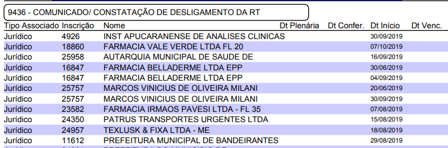

CONFERÊNCIA DE BAIXA DE RT WEB:
OCORRÊNCIAS BAIXA DE CONTRATO DE TRABALHO (WEB):
437 B.R.T. PARA EXERCER ATIVIDADE EM ESTABELECIMENTO DE OUTRA NATUREZA
438 B.R.T. POR MUDANÇA DA EMPRESA DE MESMA NATUREZA POR MELHORES CONDIÇÕES DE TRABALHO
439 B.R.T. POR MUDANÇA DE FILIAL NA MESMA EMPRESA.
440 B.R.T. POR MUDANÇA DE CIDADE OU TRANSFERÊNCIA PARA OUTRO CRF.
441 B.R.T., É NÃO IREI MAIS EXERCER ATIVIDADE COMO PROFISSIONAL
442 B.R.T. POR OUTROS MOTIVOS
Abrir protocolo e visualizar arquivos.
CASO ESTEJA CORRETO:
Clicar em Evolução. Local: 101 (Cadastro Baixa) / Situação: 2 (Deferido/Aprovado) / Julgamento: 2
(Deferido/Aprovado).
Fazer download dos arquivos e do protocolo e migrar para o GED (No GED renomear Baixa de RT web +
data
protocolo formato AAAA_MM_DD)
Abrir o cadastro da empresa para verificar situação do estabelecimento:
inativar o status 210 e incluir status atual da empresa, com horários e prazo.
avaliar necessidade de ofício.
B.R.T. SOLICITADA DENTRO DO PRAZO? (30 DIAS):
validar se a data colocada como de último dia trabalhado está compatível com a data do(s)
documento(s)
apresentado(s). Em caso de divergência, considerar sempre data mais antiga – considerando
formulário
assinado pela empresa e profissional, baixa da vigilância ou rompimento de vínculo
(CTPS/RESCISÃO ou
DISTRATO);
avaliar o prazo entre a data da baixa e do protocolo, ultrapassando 30 dias encaminhar a ética
via
protocolo interno:
Local da Evolução - 11 / Situação - 6 / Julgamento - 11 / Local Encaminhamento - 11
Parecer
PROFISSIONAL PROTOCOLOU BAIXA EM PRAZO SUPERIOR A 30 DIAS, SENDO QUE SEU AFASTAMENTO FOI EM
Local - 11 / Situação - 6 / Julgamento - 11 / Local Encaminhamento - 11
Parecer
NÃO APRESENTOU DOCUMENTOS OBRIGATÓRIOS PARA BAIXA NO PRAZO DE 30 DIAS DO PROTOCOLO.
CASO SEJA DESISTÊNCIA AO INVÉS DE BAIXA:
No protocolo, inicialmente alterar o campo “Dados do Protocolo”, acima das informações padrão, incluir
***DESISTÊNCIA DE RT***;
Clicar em Evolução. Local: 46 (Cadastro Baixa) / Situação: 2 (Deferido/Aprovado) / Julgamento: 2 (Deferido/Aprovado).
Parecer:
O PROCEDIMENTO TRATA-SE DE DESISTÊNCIA DA RT UMA VEZ QUE O INGRESSO SERIA APRECIADO PELO PLENÁRIO.
DESISTÊNCIA EFETIVADA.
Fazer download dos arquivos e do protocolo e migrar para o GED (No GED renomear Desistência de RT web + data protocolo formato AAAA_MM_DD)
Abrir o cadastro da empresa para verificar situação do estabelecimento considerando DESISTÊNCIA:
inativar o status 100, 101, 105 ou 108 de registro ou ingresso aprovado Ad ou em andamento e, incluir status atual da empresa, com horários e prazo.
CASO JÁ TENHA REGULARIZADO A BAIXA DE RT DE FORMA PRESENCIAL OU POR MEIO DE OUTRO PROTOCOLO WEB
CONFERIDO:
Clicar em Evolução. Local: 46 (Cadastro Baixa) / Situação: 4 (Arquivado) / Julgamento: 8 (Arquivamento do procedimento).
Parecer:
PROCEDIMENTO DE BAIXA DE RT EFETIVADO EM PROCEDIMENTO PRESENCIAL DIA DD/MM/AAAA / PROCEDIMENTO DE
BAIXA DE RT
EFETIVADO EM PROTOCOLO ANTERIOR DE BAIXA DE RT WEB
Salvar protocolo. Não há necessidade de fazer download do arquivo e do protocolo e migrar para o GED
CASO PROCEDIMENTO (ARQUIVO) ESTEJA ERRADO:
Clicar em Evolução: Local: 46 (Cadastro Baixa) / Situação: 25 (Aguarda resposta do requerente) / Julgamento: 18 (Solicitação ao Requerente) / 32 (CRF-PR EM CASA) Local Encaminhamento.
Parecer:
FALTA DECLARAÇÃO DE BAIXA DA VIGILÂNCIA SANITÁRIA;
FALTA QUEBRA DE VÍNCULO DE TRABALHO; (PÁGINA DA CTPS DO CONTRATO COM DATA DE SAÍDA E
ASSINATURA DA EMPRESA OU RESCISÃO/DISTRATO COM ASSINATURA DA EMPRESA E DO PROFISSIONAL);
OU
CASO AINDA NÃO POSSUA TODOS OS DOCUMENTOS, PODERÁ APRESENTAR FORMULÁRIO DE REQUERIMENTO
PREENCHIDO E ASSINADO (MARCANDO TODOS OS DOCUMENTOS QUE FALTAM E O MOTIVO);
FALTOU APRESENTAR A CTPS COM ANOTAÇÃO/DECLARAÇÃO DA TRANSFERÊNCIA, INDICANDO A DATA E O CNPJ
PARA O QUAL FOI TRANSFERIDO (DOCUMENTO ASSINADO PELA EMPRESA);
* DEVERÁ ENCAMINHAR OS DOCUMENTOS NO PRAZO DE 01 (UM) DIA ÚTIL, PELO MENU DE PROTOCOLOS (TELA
INICIAL), PROTOCOLOS AGUARDANDO RESPOSTA.
FAVOR CONSULTAR PASSO A PASSO NO LINK https://www.crf-pr.org.br/noticia/visualizar/8459
***LEMBRANDO QUE MARCAR NO FORMULÁRIO QUE NÃO ESTÁ APRESENTANDO ALGUM DOCUMENTO, NÃO ISENTA
DE APRESENTAÇÃO POSTERIOR (EM ATÉ 30 DIAS) CONFORME DESCRITO NO FORMULÁRIO.
BAIXA COM DOCUMENTO PENDENTE:
Clicar em Evolução. Local: 46 (Cadastro Baixa) / Situação: 25 (Aguarda resposta do requerente) /
Julgamento: 2 (Efetivado) / Local Encaminhamento: 32 (CRF-PR EM CASA).
Parecer:
DOCUMENTOS FALTANTES:
FALTA QUEBRA DE VÍNCULO DE TRABALHO; (PÁGINA DA CTPS DO CONTRATO COM DATA DE SAÍDA E
ASSINATURA DA EMPRESA OU RESCISÃO/DISTRATO COM ASSINATURA DA EMPRESA E DO PROFISSIONAL);
FALTA DECLARAÇÃO DE BAIXA DA VIGILÂNCIA SANITÁRIA;
FALTOU APRESENTAR A CTPS COM ANOTAÇÃO/DECLARAÇÃO DA TRANSFERÊNCIA, INDICANDO A DATA E O CNPJ
PARA O QUAL FOI TRANSFERIDO.
***PRAZO PARA APRESENTAR COMPLEMENTAÇÃO DE DOCUMENTOS – 30 DIAS (CORRIDOS) DO PROTOCOLO***
ATENÇÃO. REALIZADA A BAIXA DE RESPONSABILIDADE TÉCNICA DO ESTABELECIMENTO EM CARÁTER
***PROVISÓRIO***. O PROFISSIONAL ESTÁ CIENTE DE QUE RESPONDERÁ POR TODAS AS INFORMAÇÕES
PRESTADAS, E QUE NO PRAZO MÁXIMO DE 30 (TRINTA) DIAS DEVERÁ APRESENTAR OS DOCUMENTOS FALTANTES,
SOB PENA DE RESPONDER A PROCESSO ÉTICO DISCIPLINAR.
– PARA APRESENTAR OS DOCUMENTOS O PROFISSIONAL DEVERÁ ACESSAR O CRF EM CASA E “EM PROTOCOLOS
AGUARDANDO
RESPOSTA” E ANEXAR O DOCUMENTO FALTANTE.
Fazer download dos arquivos e do protocolo e migrar para o GED (No GED renomear Baixa de RT web +
data protocolo formato AAAA_MM_DD)
APÓS 48 HORAS SEM A CORREÇÃO DO PROCEDIMENTO:
Abrir protocolo para cancelamento da ocorrência da B.R.T.:
Local: 46 (Cadastro Baixa) / Situação: 3 (Indeferido) / Julgamento: 3 (Indeferido).
Parecer:
INDEFERIDO REQUERIMENTO DE BAIXA.
DOCUMENTOS SOLICITADOS PARA CORREÇÃO DO PROCEDIMENTO DE BAIXA DE RT NÃO FORAM ENVIADOS NO PRAZO
DE 01 (UM) DIA ÚTIL DA RESPOSTA DO CRF-PR.
* DEVERÁ INICIAR NOVO REQUERIMENTO DE BAIXA DE RESPONSABILIDADE TÉCNICA, ANEXANDO TODOS OS
DOCUMENTOS NECESSÁRIOS.
FAVOR CONSULTAR PASSO A PASSO NO LINK https://www.crf-pr.org.br/noticia/visualizar/8459
DATA DA SOLICITAÇÃO – 01/01/2022.
MOTIVO DO INDEFERIMENTO:
FALTOU QUEBRA DE VÍNCULO DE TRABALHO; (PÁGINA DA CTPS DO CONTRATO COM DATA DE SAÍDA E
ASSINATURA DA EMPRESA OU RESCISÃO COM ASSINATURA DA EMPRESA E DO PROFISSIONAL);
FALTOU DECLARAÇÃO DE BAIXA DA VIGILÂNCIA SANITÁRIA;
FALTOU APRESENTAR A CTPS COM ANOTAÇÃO/DECLARAÇÃO DA TRANSFERÊNCIA, INDICANDO A DATA E O CNPJ
PARA O QUAL FOI TRANSFERIDO; *DEVE SER EM FORMA DE DECLARAÇÃO COM PAPEL TIMBRADO OU NA CTPS.
PORÉM, PARA AMBOS É OBRIGATÓRIO SER ASSINADA PELA EMPRESA*
OU
CASO AINDA NÃO POSSUA TODOS OS DOCUMENTOS, PODERÁ APRESENTAR FORMULÁRIO DE REQUERIMENTO
PREENCHIDO E ASSINADO (MARCANDO TODOS OS DOCUMENTOS QUE FALTAM E O MOTIVO);
Fazer download dos arquivos e do protocolo e migrar para o GED. (No GED renomear Indeferimento de
Baixa de RT web + data protocolo formato AAAA_MM_DD)
Abrir cadastro do estabelecimento para verificação da situação:
Incluir status 9436 – COMUNICADO/ CONSTATAÇÃO DE DESLIGAMENTO DA RT:
Colocar data de início = data do desligamento / data fim o prazo de 30 dias para programação de
notificação ao estabelecimento caso o profissional não regularize a baixa e o estabelecimento fique
irregular sem o profissional.
CONTROLE DO PRAZO DE 1 DIA ÚTIL PARA ENVIO DE CORREÇÃO DO PROCEDIMENTO:
CONTROLE DOS STATUS 9436 PARA NOTIFICAÇÃO DOS ESTABELECIMENTOS CASO PROFISSIONAL NÃO EFETIVE A
BAIXA:
Selecionar Menu Sagicon:
Status;
Relatório/Manutenção de Status;
Tipo de relatório Firma;
Incluir status 9436;
Pesquisar;
Visualizar.
Verificar os estabelecimentos com Data Vencimento próxima para notificar a empresa adequar
assistência, caso o profissional ainda não tenha regularizado a baixa da RT.

MODELO NOTIFICAÇÃO DO ESTABELECIMENTO APÓS BAIXA WEB SER INDEFERIDA:
Oficiar (AR) o estabelecimento DROGARIA SJS LTDA, tendo em vista o protocolo nº 28564, de baixa
da responsabilidade técnica via web do(a) profissional DESIREE NASCIMENTO, na condição de
diretora técnica desse estabelecimento, informamos que embora a baixa não tenha sido efetivada
por questões documentais, considerando a informação de que não trabalha mais nesse
estabelecimento desde 12.01.2020, ficando sem assistência de farmacêutico habilitado para o
horário de segunda a sábado das 09 às 12 h e 13 as 16 h, fica o estabelecimento notificado a
regularizar a assistência farmacêutica para todo horário de funcionamento, na forma do art. 24
da Lei 3.820/60 combinado com art. 15 da Lei Federal 5.991/73 e Lei 13.021/2014, sob a pena
autuações e multas na constatação da ausência do(a) referido(a) farmacêutico(a), a partir da
ciência do ofício, conforme previsto a Resolução 648/2017 do Conselho Federal de Farmácia.